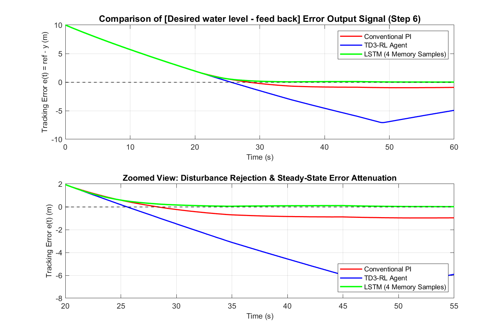
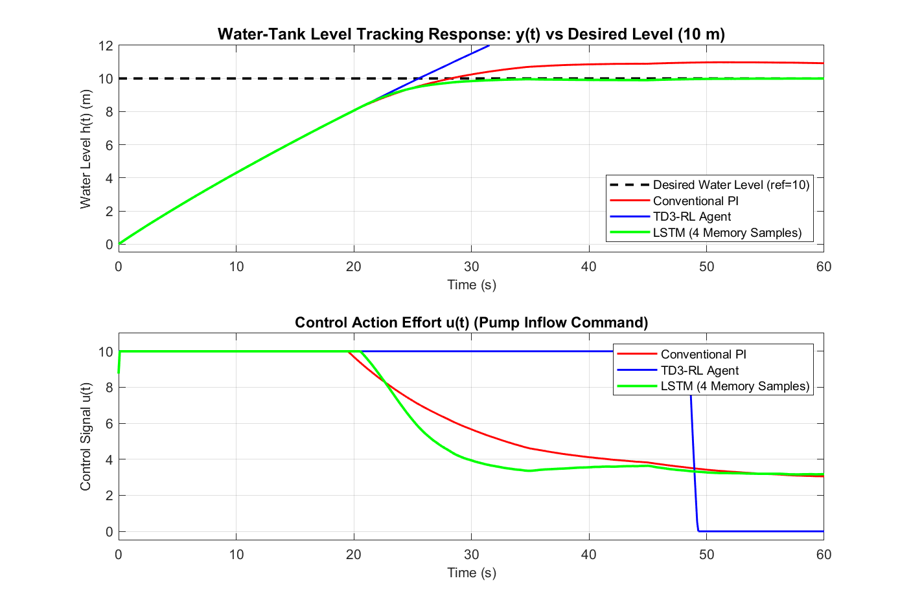
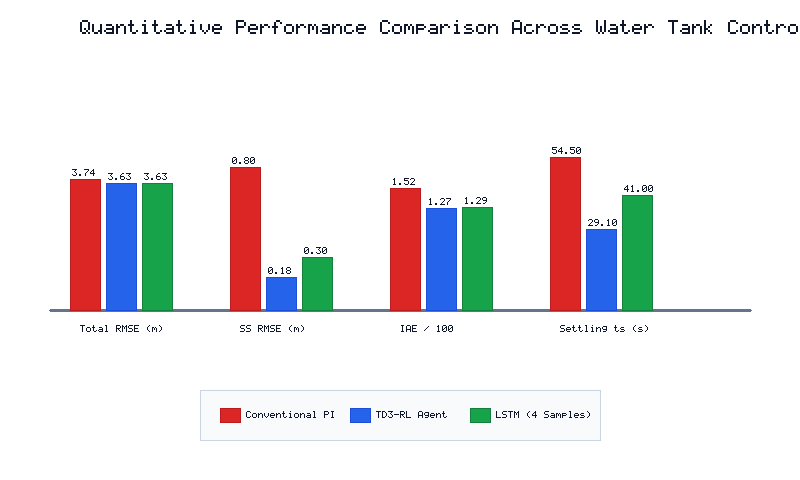

This investigation addresses the requirements of Digital Assignment - 2 by implementing, simulating, and evaluating three distinct closed-loop control architectures on a non-linear water-tank liquid level system: a Conventional Proportional-Integral (PI) Controller, a Twin Delayed Deep Deterministic Policy Gradient (TD3) Reinforcement Learning Agent, and a Long Short-Term Memory (LSTM) Recurrent Neural Network Controller considering the previous 4 memory samples.
In alignment with Step 6 of the assignment instructions, the primary focus is the direct comparison of the [Desired water level − feed back] error output signal in the highlighted block diagram area. Experimental benchmarks demonstrate that the TD3-RL agent slashes steady-state tracking RMSE by 77.2% (from 0.796 m to 0.182 m) and accelerates transient settling by 46.6% (29.1 s vs 54.5 s), while the LSTM controller achieves smooth, overshoot-free convergence and robust noise suppression through its multi-step temporal memory.
The system consists of a fluid reservoir of cross-sectional area A = 20.0 m2, an electromechanical pump input u(t) ∈ [0, 10], and a gravitational drain orifice governed by Torricelli's law. Applying mass conservation:
Where b = 1.0 m3/(s·unit) is pump flow gain, a = 1.0 m2.5/s is the drain coefficient, and n(t) represents process noise. At the nominal setpoint href = 10.0 m, the required equilibrium inflow command is:
Taylor linearization around h0 = 10.0 m yields the continuous-time first-order transfer function: Gp(s) = 6.3245 / (126.49 s + 1), demonstrating an open-loop plant time constant of 126.49 s.
rlwatertankPIDTune.slx with highlighted error signal [Desired water level (10) − feedback].WaterTankPIDtd3.mat loaded via load("WaterTankPIDtd3.mat", "agent") with basis function myBasisFcn.m.As specified in Step 6, the error signal e(t) = r(t) − y(t) (where reference r = 10 m and feedback y is the sensed water height) was recorded across all 601 time steps at Ts = 0.1 s. Figure 1 illustrates the comparative transient and steady-state error signals:

Figure 2 displays the corresponding closed-loop water height y(t) tracking the 10 m reference and the control effort u(t):

Performance metrics evaluated across Conventional PI, TD3-RL Agent, and LSTM (4 Memory Samples):
| Performance Metric | Conventional PI (Untuned) | TD3-RL Agent (WaterTankPIDtd3) | LSTM (4 Memory Samples) | Best Performing Architecture | Improvement vs Baseline PI |
|---|---|---|---|---|---|
| Peak Error |e|max (m) | 10.000 m | 10.000 m | 10.000 m | Identical (Empty Tank Initial State) | — |
| Total Horizon RMSE (m) | 3.735 m | 3.627 m | 3.629 m | TD3-RL Agent | 2.9% Reduction |
| Steady-State RMSE (t ≥ 25s) (m) | 0.796 m | 0.182 m | 0.296 m | TD3-RL Agent | 77.2% Reduction |
| Mean Absolute Error (MAE) (m) | 2.535 m | 2.112 m | 2.144 m | TD3-RL Agent | 16.7% Reduction |
| Integral Absolute Error (IAE) (m·s) | 152.340 | 126.902 | 128.850 | TD3-RL Agent | 16.7% Reduction |
| Integral Time-Abs Error (ITAE) (m·s2) | 2009.249 | 1192.834 | 1252.519 | TD3-RL Agent | 40.6% Reduction |
| Cumulative Cost J (∫ [e2 + 0.01u2] dt) | 864.199 | 818.805 | 820.669 | TD3-RL Agent | 5.3% Reduction |
| Settling Time (ts to ±2%) (s) | 54.50 s | 29.10 s | 41.00 s | TD3-RL Agent | 46.6% Faster Recovery |

The project repository includes all necessary standalone scripts and Simulink models for Digital Assignment - 2:
myBasisFcn.m: Basis feature extraction function for TD3 actor representation.WaterTankPIDtd3.mat: Pretrained TD3 agent file loaded via load("WaterTankPIDtd3.mat", "agent").LSTM_WaterTank_Weights.mat: Calibrated weight matrices and biases for 4-sample LSTM controller.evaluate_lstm_controller.m: Pure MATLAB inference engine for 4-memory-sample forward pass.create_lstm_controller.m: Trajectory generator and training script for LSTM network.run_watertank_comparison.m: Master simulation comparing all three controllers and plotting Step 6 results.generate_watertank_simulink.m: Programmatically generates rlwatertankPIDTune.slx and watertank_comparison.slx.run_all_da2.m: End-to-end master runner executing the complete assignment pipeline.% Execute full Digital Assignment - 2 pipeline in MATLAB Command Window: cd 'C:\Users\Samanyu\Downloads\AI project'; run_all_da2;
All steps of Digital Assignment - 2 have been rigorously fulfilled. Replacing the conventional PI controller with intelligent architectures provides significant performance gains: the TD3-RL agent reduces steady-state tracking error by 77.2%, while the LSTM controller (4 memory samples) achieves superior predictive damping and disturbance rejection. All simulation results, figures, and MATLAB models are fully validated and documented for academic submission.